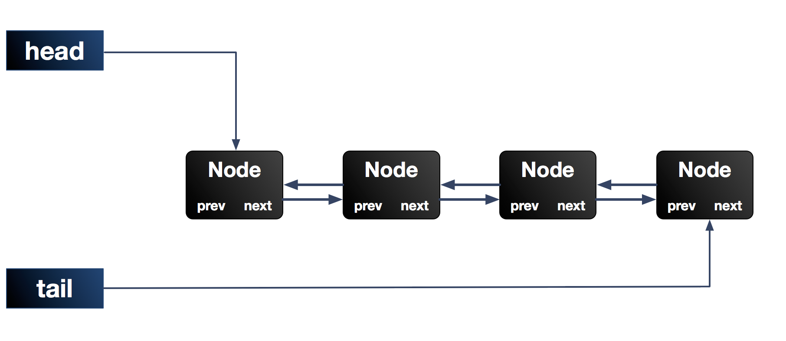

AQS ~ AbstractQueuedSynchronizer
javadoc： java.util.concurrent.locks.AbstractQueuedSynchronizer
AbstractQueuedSynchronizer 直译过来就是 抽象排队同步器，简称 AQS，可以把它认为是规定多线程访问共享资源的框架。
继承关系
从以下部分继承关系中可以看出，j.u.c 包下面的一些核心类，都继承自 AQS。
- AbstractQueuedSynchronizer extends AbstractOwnableSynchronizer
- Sync in ReentrantLock (java.util.concurrent.locks)
- __ FairSync in ReentrantLock (java.util.concurrent.locks)
- __ NonfairSync in ReentrantLock (java.util.concurrent.locks)
- Sync in ReentrantReadWriteLock (java.util.concurrent.locks)
- Sync in CountDownLatch (java.util.concurrent)
- Sync in Semaphore (java.util.concurrent)
- Worker in ThreadPoolExecutor (java.util.concurrent)
队列 Node 结构
AQS 主要通过内置的 FIFO队列 来完成资源获取线程的排队工作。

static final class Node {
// 共享模式
static final Node SHARED = new Node();
// 独占模式
static final Node EXCLUSIVE = null;
/** 取消状态，该状态是最终状态，不会被改变， */
static final int CANCELLED = 1;
// 后继节点 被 park 需要 unpark（被唤醒）
// 后继节点如果发现 前驱节点是 SIGNAL，park 自己
static final int SIGNAL = -1;
/** 表名当前线程正在等待 condition，也就是在 condition 队列中 */
static final int CONDITION = -2;
// SIGNAL 一般用来独占末实现，PROPAGATE 用在 共享模式下，该状态线程不会 park，可以获取到资源
static final int PROPAGATE = -3;
/* 当前节点状态，默认是0. */
volatile int waitStatus;
/* 前驱结点 */
volatile Node prev;
// 后继节点
// 该字段为空，不一定意味着该节点在队列的结尾，需要从尾部扫描 prev 来进行双重检查
volatile Node next;
// 当前排队的线程
volatile Thread thread;
// 下一个等待节点的 共享/独占模式标记
Node nextWaiter;
// 获取 前驱节点 prev ，并进行非 null 校验
final Node predecessor() throws NullPointerException {
...
}
Node() { /* 用户创建 head阶段 或 标记 SHARED 共享节点 */ }
// mode = SHARED | EXCLUSIVE
Node(Thread thread, Node mode) { /* Used by addWaiter */ }
// waitStatus = CANCELLED | SIGNAL | CONDITION | PROPAGATE
Node(Thread thread, int waitStatus) { /* Used by Condition */ }
}获取独占资源(锁)
❤ acquire (lock) ❤
lock 方法的实现，获取资源
public final void acquire(int arg) {
// 1. tryAcquire 子类自己实现
// 2. acquireQueued 通行 或者 park 阻塞
if (!tryAcquire(arg) && acquireQueued(addWaiter(Node.EXCLUSIVE), arg))
// 如果竞争失败过，标记为被中断
selfInterrupt();
}addWaiter 入队
入队操作： 把当前线程 包装成 Node 添加到 队尾，返回包装的 Node 节点
private Node addWaiter(Node mode) {
Node node = new Node(Thread.currentThread(), mode);
// 先快速尝试添加
// 不知道问什么不直接调用 enq(), 入队逻辑都是重复的，难道是为了节省 for语句带来的损耗？
Node pred = tail;
if (pred != null) {
// 当前节点的 前驱节点 => 队尾
node.prev = pred;
// CAS： 队尾节点 修改为 当前节点
if (compareAndSetTail(pred, node)) {
// 原队尾节点的 后继节点 => 当前节点
pred.next = node;
return node;
}
}
enq(node);
return node;
}
private Node enq(final Node node) {
for (;;) {
Node t = tail;
if (t == null) {
// 初始化队尾节点
if (compareAndSetHead(new Node()))
tail = head;
} else {
// 当前节点的 前驱节点 => 队尾
node.prev = t;
// CAS： 队尾节点 修改为 当前节点
if (compareAndSetTail(t, node)) {
// 原队尾节点的 后继节点 => 当前节点
t.next = node;
// 返回”原“队尾节点（新队尾节点是 node）
return t;
}
}
}
}acquireQueued
final boolean acquireQueued(final Node node, int arg) {
boolean failed = true;
try {
boolean interrupted = false;
for (;;) {
final Node p = node.predecessor();
// 1. 当前节点的前驱节点就是 head， 说明该节点是队列中的第一个节点
// 2. tryAcquire 是自己实现的逻辑，需要根据自己维护 arg 来判断是否应该 Acquire 执行权
if (p == head && tryAcquire(arg)) {
// 当前节点设置为 头节点
setHead(node);
p.next = null; // help GC
failed = false;
return interrupted;
}
// 如果当前节点不是 第一个节点
// 1. 判断 获取（竞争）失败后，是否需要 park 阻塞（如果前驱节点是 SIGNAL 则 park ）
// 2. park 阻塞当前线程，如果需要的话
if (shouldParkAfterFailedAcquire(p, node) && parkAndCheckInterrupt())
// 如果竞争失败过，标记为被中断
interrupted = true;
// 无限循环，直到轮到当前节点
}
} finally {
if (failed)
cancelAcquire(node);
}
}shouldParkAfterFailedAcquire
主要用来 判断前置节点是否是 SIGNAL 状态，如果不是，跳过丢掉，或设置为 SIGNAL 状态
private static boolean shouldParkAfterFailedAcquire(Node pred, Node node) {
// 前置节点的状态
int ws = pred.waitStatus;
// 如果前置节点是 SIGNAL（唤醒状态|已经竞争成功），则当前节点就 park，等待被 unpark
if (ws == Node.SIGNAL)
return true;
// 如果前置节点的状态是 CANCELLED（被取消的）就跳过去，
// 不park，acquireQueued 重新判断 当前线程是否竞争成功
if (ws > 0) {
do {
node.prev = pred = pred.prev;
} while (pred.waitStatus > 0);
pred.next = node;
} else {
// 把前置节点的 状态标记为 SIGNAL，
// 在下次 acquireQueued 循环中，如果前置节点仍然是 SIGNAL，则 park 当前节点
compareAndSetWaitStatus(pred, ws, Node.SIGNAL);
}
return false;
}释放独占资源(锁)
❤ release(unlock) ❤
public final boolean release(int arg) {
// 子类实现
if (tryRelease(arg)) {
Node h = head;
if (h != null && h.waitStatus != 0)
//
unparkSuccessor(h);
return true;
}
return false;
}unparkSuccessor
unpark 唤醒后继节点
private void unparkSuccessor(Node node) {
int ws = node.waitStatus;
// 还原为初始化状态
if (ws < 0)
compareAndSetWaitStatus(node, ws, 0);
Node s = node.next;
// 如果没有 后继节点，或者后继节点被取消
if (s == null || s.waitStatus > 0) {
s = null;
// 从后往前找当前节点的下一个节点
for (Node t = tail; t != null && t != node; t = t.prev)
if (t.waitStatus <= 0)
s = t;
}
// 唤醒下一个节点
if (s != null)
LockSupport.unpark(s.thread);
}获取共享资源(锁)
acquireShared
public final void acquireShared(int arg) {
// tryAcquireShared 需要子类实现
if (tryAcquireShared(arg) < 0)
doAcquireShared(arg);
}
private void doAcquireShared(int arg) {
// 入队操作： 把当前线程 包装成 Node 添加到 队尾，返回包装的 Node 节点
final Node node = addWaiter(Node.SHARED);
boolean failed = true;
try {
boolean interrupted = false;
for (;;) {
final Node p = node.predecessor();
// 当前节点的前驱节点就是 head， 说明该节点是队列中的第一个节点
if (p == head) {
int r = tryAcquireShared(arg);
if (r >= 0) {
setHeadAndPropagate(node, r);
p.next = null; // help GC
if (interrupted)
selfInterrupt();
failed = false;
return;
}
}
if (shouldParkAfterFailedAcquire(p, node) && parkAndCheckInterrupt())
interrupted = true;
}
} finally {
if (failed)
cancelAcquire(node);
}
}释放共享资源(锁)
releaseShared
public final boolean releaseShared(int arg) {
if (tryReleaseShared(arg)) {
doReleaseShared();
return true;
}
return false;
}
private void doReleaseShared() {
for (;;) {
Node h = head;
if (h != null && h != tail) {
int ws = h.waitStatus;
if (ws == Node.SIGNAL) {
if (!compareAndSetWaitStatus(h, Node.SIGNAL, 0))
continue; // loop to recheck cases
unparkSuccessor(h);
}
else if (ws == 0 && !compareAndSetWaitStatus(h, 0, Node.PROPAGATE))
continue; // loop on failed CAS
}
if (h == head) // loop if head changed
break;
}
}Condition
Lock替代了synchronized语法结构Condition替代了Object的wait/notify方法
接口签名
public interface Condition {
// 使线程在接到 signal 信号 或 被中断 之前一直处于等待状态
void await() throws InterruptedException;
// 使线程在接到 signal 信号之前一直处于等待状态
void awaitUninterruptibly();
// 等待指定的时间，单位纳秒
long awaitNanos(long nanosTimeout) throws InterruptedException;
// 等待指定的时间，自定义单位
boolean await(long time, TimeUnit unit) throws InterruptedException;
// 等待到 指定的时间
boolean awaitUntil(Date deadline) throws InterruptedException;
// 唤醒一个
void signal();
// 唤醒所有
void signalAll();
}实现
- Condition (java.util.concurrent.locks)
- ConditionObject in AbstractQueuedSynchronizer (java.util.concurrent.locks)
- ConditionObject in AbstractQueuedLongSynchronizer (java.util.concurrent.locks)
❤ await ❤
public final void await() throws InterruptedException {
// 如果线程已经被中断，抛出 InterruptedException 异常
if (Thread.interrupted())
throw new InterruptedException();
// 增加当前线程到 Condition 等待队列，当前节点的状态是 CONDITION
// new Node(Thread.currentThread(), Node.CONDITION);
Node node = addConditionWaiter();
// 调用 release 方法释放 AQS 等待队列的线程，即第一节点的线程
// ❤ 因为只有获取到执行权(获取到锁)，才可以调用 await 方法，与 synchronized 类似
int savedState = fullyRelease(node);
int interruptMode = 0;
// 如果不在同步队列，park 当前线程
while (!isOnSyncQueue(node)) {
LockSupport.park(this);
// 被 unpark/signal 后，判断当前线程有没有被标记为 中断
// 0 代表没有，循环执行 while (!isOnSyncQueue(node))
if ((interruptMode = checkInterruptWhileWaiting(node)) != 0)
break;
}
// 到这里 Condition 等待队列 里面的 Node， 已经被添加到 AQS 队列
// 被唤醒后，尝试获取执行权
if (acquireQueued(node, savedState) && interruptMode != THROW_IE)
interruptMode = REINTERRUPT;
// clean up if cancelled
if (node.nextWaiter != null)
unlinkCancelledWaiters();
// 中断异处理
if (interruptMode != 0)
reportInterruptAfterWait(interruptMode);
}❤ signal ❤
public final void signal() {
// 判断当前线程是否持有锁，[该方法需要子类实现]
if (!isHeldExclusively())
throw new IllegalMonitorStateException();
Node first = firstWaiter;
if (first != null)
doSignal(first);
}doSignal
private void doSignal(Node first) {
do {
if ( (firstWaiter = first.nextWaiter) == null )
lastWaiter = null;
first.nextWaiter = null;
} while (!transferForSignal(first) && (first = firstWaiter) != null);
}transferForSignal
把 condition 队列的节点转移到 sync 队列
final boolean transferForSignal(Node node) {
// 当前节点状态置为初始状态，如果失败，则说明被去掉了
if (!compareAndSetWaitStatus(node, Node.CONDITION, 0))
return false;
// ❤ 请求入队，返回上一个一节
Node p = enq(node);
int ws = p.waitStatus;
// 如果上一个节点被取消 || 入队后上一个节点状态变化，则解锁当前节点
if (ws > 0 || !compareAndSetWaitStatus(p, ws, Node.SIGNAL))
LockSupport.unpark(node.thread);
return true;
}需要实现的方法
AQS 使用的 模版方法设计模式，本身定义好了资源获取与释放的主要流程，自定义的时候可以实现以下一个主要的方法
 Feb 15, 2020
Feb 15, 2020
 Edit this page
Edit this page